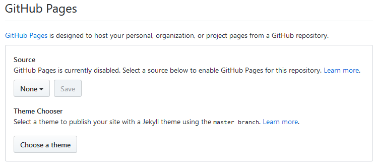

Jak to zrobić
----------------------
Umieszczanie stron na github'ie
W internecie
Stworzone przez M.J.
Krok 1.
Utwórz nowe repozytorium ==> Zielony przycisk po prawej
Nazwij je, dodaj opis oraz dla
początkujących polecam zaznaczenie opcji aby dołączyć plik README.md
Krok 2.
Wstawmy pliki strony
Kliknij przycisk "Upload files"
Teraz przeciągnij folder plików
Krok 3.
Już mamy wstawione nasze pliki, ale co zrobić jeśli chcemy zobaczyć naszą stronę w wersji html?

Ustawiamy w settings branch master i nastepnie save. Możemy zauważyć także,
że wygenerował nam się kod w tym miejscu
Teraz wystarczy skopiowa ten kod, wpisać nazwę folderu, pliku po slash'u i wkleić do wyszukiwarki i gotowe.